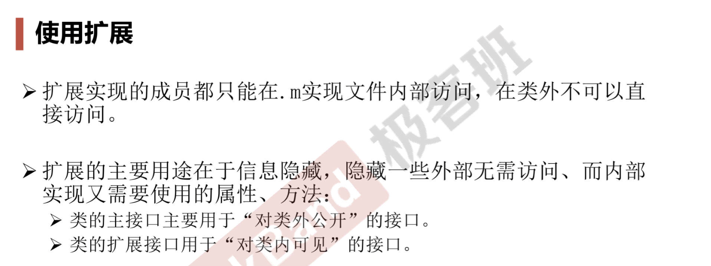

类别（category）——通过使用类别，我们可以动态地为现有的类添加新方法，而且可以将类定义模块化地分不到多个相关文件中。通常只在类别中定义方法。
类别，接口部分的定义,通常该文件命名为已有类+类别名.h
@interface 已有类 （类别名）
//.......方法实现
@end
例如，考虑为NSNumber增加一个类别，则接口部分代码如下
#import <Foundation/Foundation.h>
@interface NSNumber (code)
-(NSNumber *) add:(double) num;
-(NSNumber *) mult:(double) num
@end
该类别的实现部分如下
#import "NSNumber+code.h"
@implementation NSNumber (code)
-(NSNumber *) add:(double) num
{
return [NSNumber numberWithDouble:([self doubleValue] +num)];
}
-(NSNumber *) mult:(double) num
{
return [NSNumber numberWithDouble:([self doubleValue] +num)];
}
@end
所有NSNumber类的实例就都会具有add:、multi:方法，从而实现对NSNumber类的动态扩展。

PS.如果一个函数在.h文件中无声明而在.m文件中定义它的实现，那么该方法就是私有方法，只能在本类的文件中使用。 若我们在类别的借口部分声明这个方法，那么我们就可以实现对该私有方法的访问。
扩展（extension）
扩展与类别相似，扩展相当于匿名类别，即没有类别名得类别
在用法上，类别通常都都有单独的.h和.m文件。扩展则是临时的对某个类进行扩展，类的实现部分同时实现类接口部分定义的方法和扩展中定义的方法。定义类的扩展时，可以增加额外的实例变量，也可使用@property和@synthesize关键字，但在定义类的额外列表时不允许额外定义实例变量。
有类名为Vehicle，只有name属性没有定义方法。对其进行扩展。为原来的Vehicle类增加color属性和drive:方法，因此在Vehicle.m实现文件里面要实现Vehicle.h里声明的方法及这个drive:方法。
//"Vehicle.m"
#import "Vehicle.h"
@interface Vehicle ()
@property(nonatomic, strong) NSString *color;
-(void) drive:(NSString *)name;
@end
@implementation Vehicle
-(void) drive:(NSString *)name
{
NSLog(@"交通工具名称%@,颜色属性%@",_name,_color);
}
@end

协议（protocol）
以NSObject为基础，为NSOject创建类别，创建类别时指定该类新增的方法，既可以实现非正式协议。而OC中对于实现非正式协议的类而言，OC并不强制实现该协议中的所有方法 。
正式协议使用@protocol关键字定义
@protocol 协议名 <父协议1， 父协议2>
{
//.....方法声明
}
@end
协议是支持多继承的。在OC2.0标准中新增了@required\@optional两个关键字，声明方式是必须是必须实现还是可选的，默认为@required.
遵守协议的语法如下：
@interface 类名：父类型 <协议1， 协议2...>
使用协议来定义变量，那么这些变量只能调用该协议中声明的方法，否则编译器会提示错误。
协议体现的是一种规范，定义协议的类可以把协议定义的方法委托(delegate)给实现协议的类，这样可以让类具有更好的通用性，具体的动作交给协议的实现类来完成。在大量的应用程序开发中大量依赖委托这个概念。